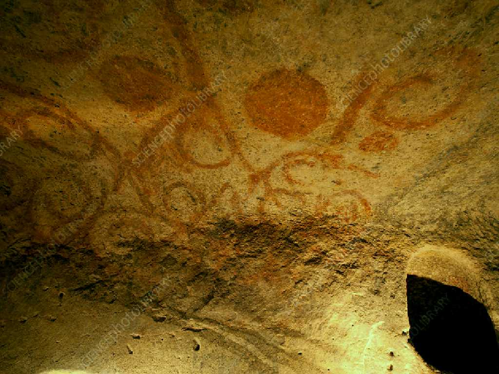
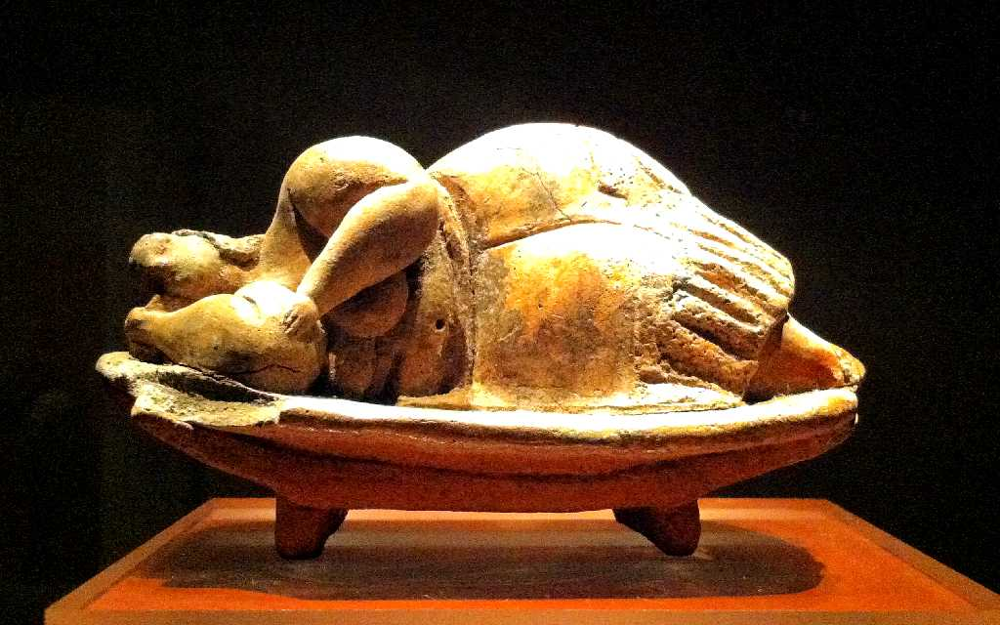
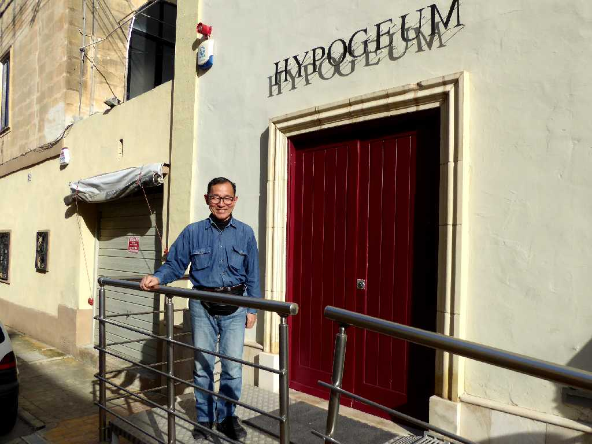

Hypogeum
エジプトのピラミッドより１０００年余り前の紀元前３６００年～３２００年に創られた先史時代の巨石神殿ハイポジューム地底神殿

Petroglyphs Hypogeum
神殿内に描かれた岩石線画

The Sleeping Lady of Malta Hypogeum
５,０００年前のマルタのレディーは豊満

March 3 2019 Hypogeum
７０００体の人骨が発掘されたことから神殿ではなく地下墳墓説もある